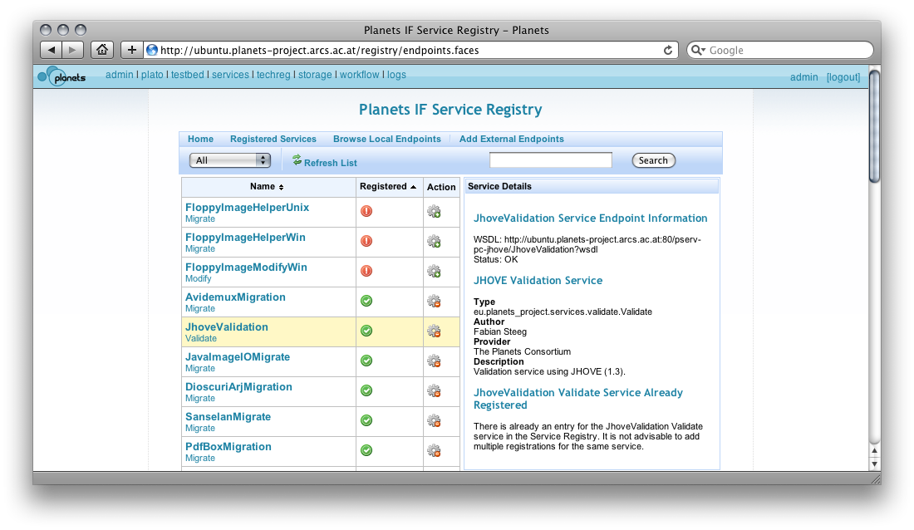

The Planets service registry enables Planets users and service providers to lookup, publish and manage information about Planets services. This information can be used to dynamically select and invoke simple services, as well as to reuse them as part of choreographed complex workflows. The service registry is part of the IF/4 work-package. The code is in the PSERV project (in IF/registry). It can be accessed from the IF administration interface and as a Java or SOAP-based web service API.

Services registered in an IF instance can be browsed using the Service registry administration UI, e.g. on the staging server at http://ubuntu.planets-project.arcs.ac.at/registry/ (login with user/user for read-only access or as admin/admin for read and write access).
The service registry UI provides information about the registered services, access to the WSDL locations, and allows the user to browse and register service endpoints.
The Service Registry can be accessed both through a Java API and via SOAP.
Given a running and configured Planets Services (PSERV) project (see http://gforge.planets-project.eu/gf/project/pserv), the local Service registry can be accessed via the RegistryFactory class:
Registry registry = RegistryFactory.getRegistry();
To connect to a remote Service registry, supply the location of the WSDL, e.g.
Registry registry = RegistryFactory.getRegistry(
"http://ubuntu.planets-project.arcs.ac.at" +
"/pserv-if-registry-pserv-if-registry/RegistryWebservice?wsdl");
Using the Registry instance, ServiceDescription objects can be registered and the registry can be queried. Queries are submitted using a query by example mechanism: a ServiceDescription object describing the services to find is created and passed to the query method, e.g. to find services by name:
List<ServiceDescription> services = registry
.query(new ServiceDescription.Builder("DROID", null).build());
The given values of the service description can be matched using different modes: exact (default), wildcard and regular expression matching, e.g. for finding services by name and using wildcard matching:
List<ServiceDescription> services = registry.queryWithMode(
new ServiceDescription.Builder("DROID*", null).build(),
MatchingMode.WILDCARD);
The diagram above shows the structure of the ServiceDescription objects used as examples in the queries. Any combination of these attributes can be set in the query example, allowing flexible and customizable service queries. For complete sample usage of the Java API, see the tests in pserv/IF/registry in the SVN repository (see http://gforge.planets-project.eu/gf/project/pserv/scmsvn/?action=AccessInfo).

The service registry is deployed as a web service at /pserv-if-registry-pserv-if-registry/RegistryWebservice?wsdl of an IF instance, e.g. on the staging server at http://ubuntu.planets-project.arcs.ac.at/pserv-if-registry-pserv-if-registry/RegistryWebservice?wsdl.
The query part of the API described above (query using example ServiceDescription objects, optional matching mode) can be accessed via SOAP. The screenshot on the right shows the Service registry SOAP API in SoapUI.
For further information, contact Carl Wilson (IF/4 WP lead, Service registry GUI) or Fabian Steeg (Service registry API).